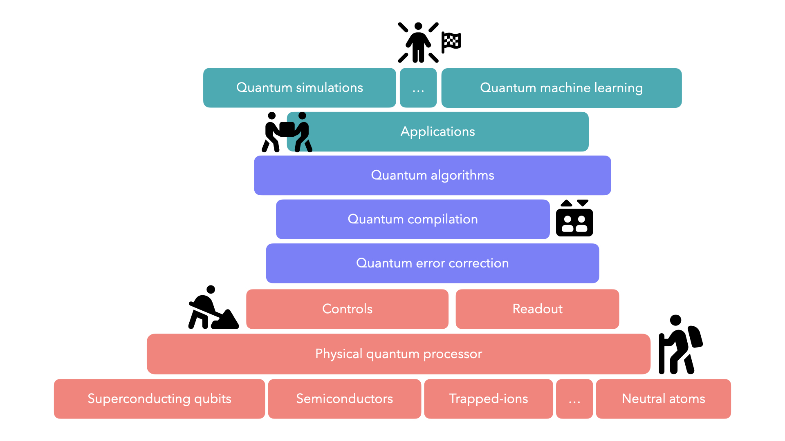

Research Overview
Throughout my research journey, I have worked with various quantum computing platforms, including trapped ions, Rydberg atoms, and semiconductors. These experiences have provided me with a comprehensive perspective on quantum computing as a multifaceted field, encompassing physical, logical, and application layers. At the physical level, I am particularly interested in qubit control. My work in quantum compilation has allowed me to explore the logical layer, deepening my understanding of the interactions between these levels. I am also eager to explore different quantum algorithms, and achieve different applications, such as quantum simulations and quantum machine learning.
The awarding of the 2024 Nobel Prize in Physics to John J. Hopfield and Geoffrey E. Hinton for their foundational work in machine learning with artificial neural networks underscores the growing significance of artificial intelligence in scientific research. I believe that integrating AI into physics investigations is an emerging trend, offering the potential to significantly accelerate discoveries and expand the boundaries of the field.
Quantum Compilation with Rydberg Atoms
Advances in laser technology have propelled the rapid development of neutral atom quantum computing platforms in last few years. However, to successfully run quantum algorithms on quantum platforms, high-level algorithmic descriptions must be translated into executable hardware operations through a compilation process, and the compilation work for neutral atom quantum computing is still in the early exploratory stages.
Neutral atom quantum computing systems can coherently move the positions of atoms trapped in optical tweezers, allowing real-time changes in qubit connectivity during computation while satisfying the constraints of the optical tweezer array. This dynamic connectivity, combined with the large number of qubits, architecture design introduces new possibilities and design challenges for quantum computing compilation. Rapidly completing the compilation process and fully leveraging the unique features of neutral atom quantum computing systems is a critical and practically significant task.
Automated Calibration of Experimental Parameters in Trapped-Ion Quantum Computer
The key advantages of Calibration of Trapped-Ion Systems include long quantum coherence times, high-precision single-qubit and two-qubit operations, and high-fidelity operations between any two qubits within the system. In trapped-ion quantum computing, single-qubit operations typically involve transitions between internal energy levels of the ions, which can be achieved by addressing the target ion with laser pulses. However, multi-qubit operations rely on the collective vibrational modes of the ion chain, known as phonons. Critical parameters such as ion positions, phonon frequencies, and the strength of ion-phonon interactions are closely related to the structure of the ion trap chip, the surrounding environment, and the configuration of the trapping potential. To achieve high-performance trapped-ion quantum computing, precise calibration of system parameters is essential.
Charge Noise in Semiconductor Spin Qubits for Quantum Computing
Semiconductor spin qubits are a promising candidate for quantum computing, owing to their compatibility with existing semiconductor fabrication techniques, long coherence times, and scalability for large-scale integration. However, building a robust quantum computer with semiconductor spin qubits faces significant challenges, the most pressing being noise—particularly charge noise. Charge noise accelerates decoherence, leading to quantum state dephasing caused by external disturbances, which undermines the stability and reliability of qubit operations. To address this critical issue, it is essential to first study and understand the underlying mechanisms of charge noise.